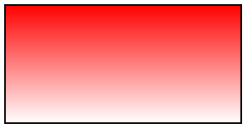
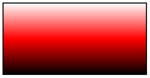
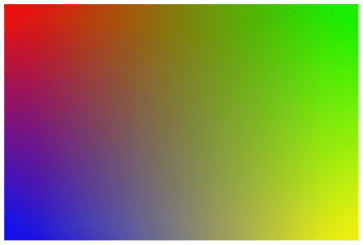
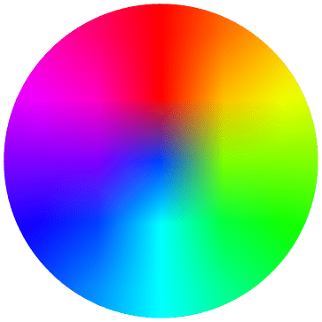
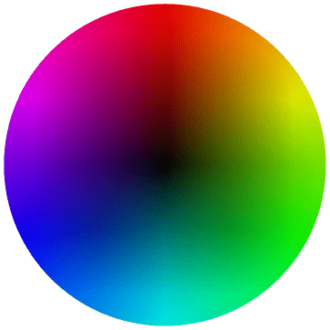
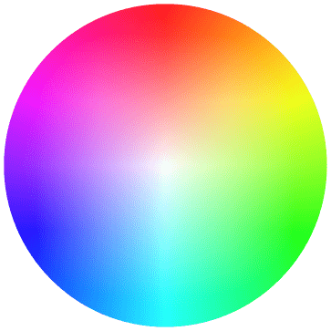
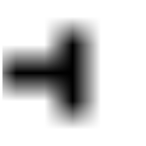
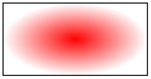
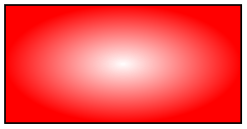

The TikZ and PGF Packages
Manual for version 3.1.9a
Libraries
68 Shadings Library
TikZ Library shadings ¶
\usepgflibrary{shadings} %
LaTeX
and plain
TeX
and pure pgf
\usepgflibrary[shadings] % ConTeXt and pure pgf
\usetikzlibrary{shadings} %
LaTeX
and plain
TeX
when using TikZ
\usetikzlibrary[shadings] % ConTeXt when using TikZ
The package defines a number of shadings in addition to the ball
and axis shadings that are available by default.
In the following, the shadings defined in the library are listed in alphabetical order. The colors of some of these shadings can be configured using special options (like left color). These options implicitly select the shading.
The three shadings axis, ball, and radial are always defined, even when this library is not used.
Shading axis ¶
In this always-defined shading the colors change gradually between three horizontal lines. The top line is at the top (uppermost) point of the path, the middle is in the middle, the bottom line is at the bottom of the path.
/tikz/top color=⟨color⟩(no default) ¶
This option sets the color to be used at the top in an axis shading. When this option is given, several things happen:
1. The shade option is selected.
2. The shading=axis option is selected.
3. The middle color of the axis shading is set to the average of the given top color ⟨color⟩ and of whatever color is currently selected for the bottom.
4. The rotation angle of the shading is set to 0.

/tikz/bottom color=⟨color⟩(no default) ¶
This option works like top color, only for the bottom color.
/tikz/middle color=⟨color⟩(no default) ¶
This option specifies the color for the middle of an axis shading. It also sets the shade and shading=axis options, but it does not change the rotation angle.
Note: Since both top color and bottom color change the middle color, this option should be given last if all of these options need to be given:

\usepgflibrary {shadings}
\tikz \draw[top color=white,bottom color=black,middle color=red]
(0,0) rectangle
(2,1);
/tikz/left color=⟨color⟩(no default) ¶
This option does exactly the same as top color, except that the shading angle is set to \(90^\circ \).
/tikz/right color=⟨color⟩(no default) ¶
Works like left color.
Shading ball ¶
This always-defined shading fills the path with a shading that “looks like a ball”. The default “color” of the ball is blue (for no particular reason).
/tikz/ball color=⟨color⟩(no default) ¶
This option sets the color used for the ball shading. It sets the shade and shading=ball options. Note that the ball will never “completely” have the color ⟨color⟩. At its “highlight” spot a certain amount of white is mixed in, at the border a certain amount of black. Because of this, it also makes sense to say ball color=white or ball color=black
\usepgflibrary {shadings}
\begin{tikzpicture}
\shade[ball color=white] (0,0) circle
(2ex);
\shade[ball color=red] (1,0) circle
(2ex);
\shade[ball color=black] (2,0) circle
(2ex);
\end{tikzpicture}
Shading bilinear interpolation ¶
This shading fills a rectangle with colors that a bilinearly interpolated between the colors in the four corners of the rectangle. These four colors are called lower left, lower right, upper left, and upper right. By changing these color, you can change the way the shading looks. The library also defines four options, called the same way, that can be used to set these colors and select the shading implicitly.

\usepgflibrary {shadings}
\tikz
\shade[upper left=red,upper right=green,
lower left=blue,lower right=yellow]
(0,0) rectangle
(3,2);
/tikz/lower left=⟨color⟩ (no default, initially white) ¶
Sets the color to be used in a bilinear interpolation shading for the lower left corner. Also, this options selects this shading and sets the shade option.
/tikz/upper left=⟨color⟩ (no default, initially white) ¶
Works like lower left.
/tikz/upper right=⟨color⟩ (no default, initially white) ¶
Works like lower left.
/tikz/lower right=⟨color⟩ (no default, initially white) ¶
Works like lower left.
Shading color wheel ¶
This shading fills the path with a color wheel.

To produce a color ring, cut out a circle from the color wheel:
Shading color wheel black center ¶
This shading looks like a color wheel, but the brightness drops to zero in the center.

Shading color wheel white center ¶
This shading looks like a color wheel, but the saturation drops to zero in the center.

Shading Mandelbrot set ¶
This shading is just for fun. It fills the path with a zoomable Mandelbrot set. Note that this is not a bitmap graphic. Rather, the Mandelbrot set is computed by the pdf renderer and can be zoomed arbitrarily (give it a try, if you have a fast computer).

Shading radial ¶
This always-defined shading fills the path with a gradual sweep from a certain color in the middle to another color at the border. If the path is a circle, the outer color will be reached exactly at the border. If the shading is not a circle, the outer color will continue a bit towards the corners. The default inner color is gray, the default outer color is white.
/tikz/inner color=⟨color⟩(no default) ¶
This option sets the color used at the center of a radial shading. When this option is used, the shade and shading=radial options are set.

\usepgflibrary {shadings}
\tikz \draw[inner color=red] (0,0) rectangle
(2,1);
/tikz/outer color=⟨color⟩(no default) ¶
This option sets the color used at the border and outside of a radial shading.

\usepgflibrary {shadings}
\tikz \draw[outer color=red,inner color=white]
(0,0) rectangle
(2,1);